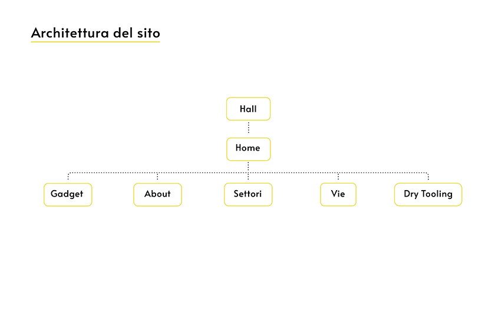
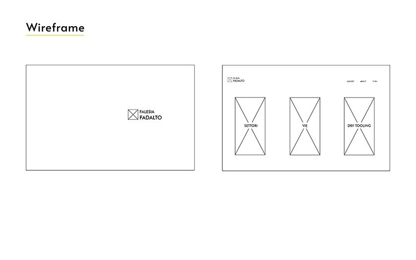
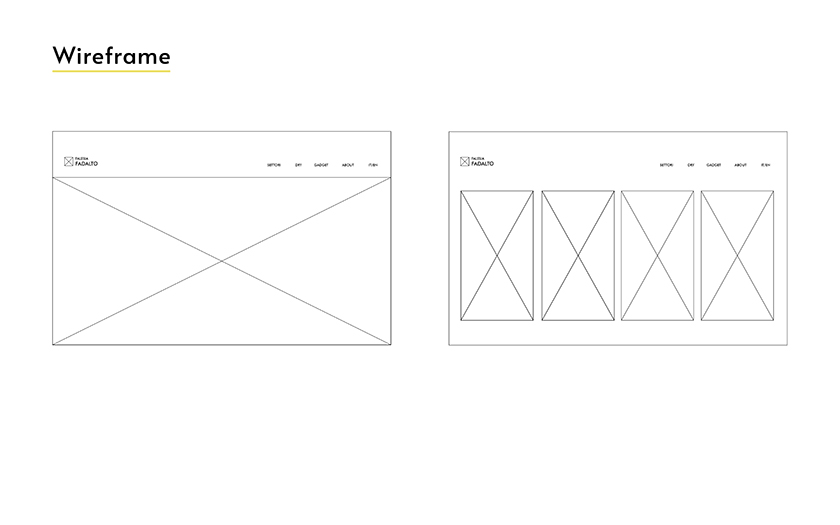
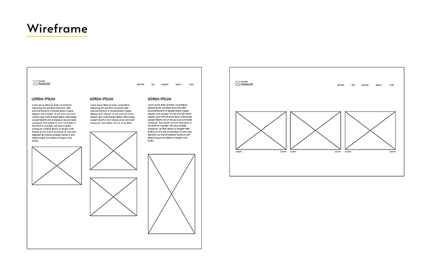
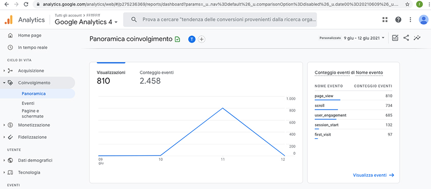
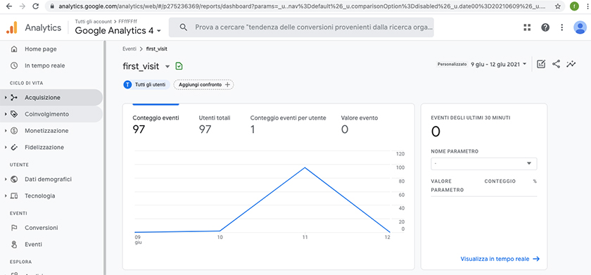
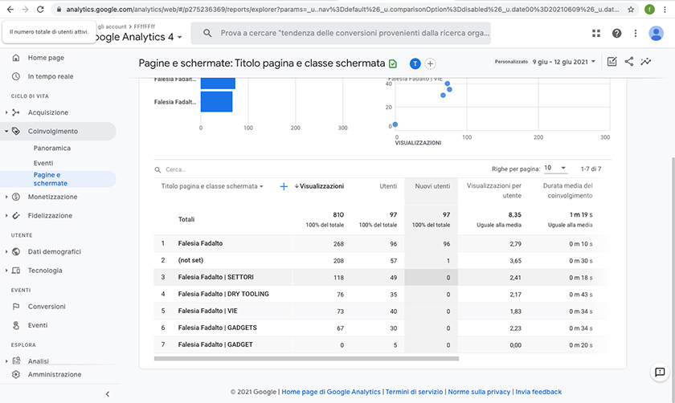

Falesia Fadalto
ABSTRACT
Il sito si propone come eco online della comunità arrampicatrice della Falesia Fadalto. La funzione primaria è quella di tenere vivo l’interesse per la falesia e informare riguardo alla palestra di roccia, stimolando i frequentatori a praticare su tutta la parete. Funzioni secondarie sono l’ampliamento dell’orizzonte degli arrampicatori con l’introduzione al DRY TOOLING e un pizzico di intrattenimento col folklore delle vie.
Il progetto mette in evidenza l’ampiezza del ventaglio delle scelte riguardanti difficoltà, stile di arrampicata, storia e tecniche offerte dalla Falesia Fadalto.
BENCHMARKING
Obiettivi
L’obiettivo con cui è stato creato il sito è quello di cementare la comunità di arrampicatori della Falesia Fadalto portando interesse sulla stessa e mantenendola viva in ogni suo settore.
Target utente
Il target primario è l’arrampicatore che ha frequentato e/o frequenta la falesia. Le età in questo gruppo sono racchiuse in un range che va dai 14 ai 55 anni.
Competitors
I siti presi in esame sono gli altri siti che trattano di arrampicata in falesia. Si nota immediatamente come la Falesia Fadalto sia trattata in maniera molto parziale da questi siti che peraltro più che sulla falesia in sé si concentrano solo su aspetti come indicazioni stradali o brevi interazioni sulle vie svolte:
ESCALIBURG : tra i competitors analizzati è sicuramente il più interessante. Da la possibilità di aggiornare una specie di diario dell’arrampicatore con le proprie vie scalata e commenti inerenti. É chiaro l’intento di creare una comunità che si autoalimenta, più sono le vie “raccontate” dallo sportivo più interessante è il sito per altri utenti.
Falesia.it : da informazioni attendibili anche se talvolta datate. Punta molto sull'ampliamento dell'esperienza in falesie limitrofe. Ovvero spinge molto sull'individuazione di luoghi di arrampicata vicini.
The Crag : sito approfondito che da informazioni attendibili, purtroppo è molto dispersivo e ostico nell'arrivare al contenuto specifico.
STRUTTURA E LAYOUT




Look and feel
- Il sito è stato pensato interamente sul contrasto tra bianco/nero e “#eff02c” (un verde acido). La scelta è stata presa seguendo la filosofia dell’arrampicata, e più in generale dello sport in montagna, secondo la quale il materiale è tutto ad alta visibilità, in modo da permettere una facile identificazione della persona anche a grande distanza (verticale nell’arrampicata, orizzontale in generale). Il font scelto è “Alata” che oltre a incontrare pienamente il mio gusto personale richiama il font utilizzato anni fa dalla scuola di arrampicata per le patch di magliette e felpe. La scelta è stata fatta con l’obiettivo di far “sentire a casa” i veterani della palestra di roccia.
LINGUAGGIO E STRUMENTI
Linguaggi web
Per la realizzazione delle pagine ho utilizzato HTML5 e CSS3.
Strumenti tecnologici
Per la grafica Adobe Illustrator e Photoshop. Per il font mi sono servito di Google Fonts. Per altri aiuti vari mi sono rivolto (divertendomi come un pazzo) a blog e forum che trattano di CSS e HTML.
BACKGROUND
Attraverso lo studio dei competitors risulta evidente la volontà di cementare la comunità dell’arrampicata sportiva anche online. Tuttavia i risultati risultano modesti proprio perché questa comunità vive di contatto, emozione condivisa e sport, che per definizione non può essere praticato online (mi perdoneranno i fan degli e - sports).
La prima tipologia di sito commette l’errore di porre al centro l’interazione tra arrampicatori, quando questa viene fatta online perde troppa della verve che invece la contraddistingue quando avviene facci a faccia. Inoltre ci si basa troppo sull’apporto dell’utente per far crescere il sito. Nel caso questo apporto venga meno ne fa le spese la falesia stessa che risulta poco appetibile solo perché meno frequentata o meno “revisionata”.
I siti che invece pongono al centro l’informazione puntano troppo sulla quantità, cercando di coprire più falesie possibile. Così facendo mancano di creare un’affinità tra l’utente e la singola palestra di roccia.
OBIETTIVI COMUNICATIVI
Obiettivi e scelte
L’obiettivo di questo progetto non è pubblicizzare la falesia poiché so per esperienza che ciò porterebbe ad un affollamento del luogo che finirebbe per allontanare i veri affezionati. Questo vorrebbe dire abbandono totale della palestra di roccia allorché i frequentatori “per moda” passeranno a nuove zone. Lo scopo del sito è quindi quello di comunicare con la comunità esistente, farla interessare a tutti i settori e una volta sul posto stringersi ulteriormente nell’affetto per queste pareti rocciose. L'obiettivo è quindi raggiungere i componenti della comunità storica della falesia, traadotto in numeri: arrivare a 60 visualizzazioni.
TARGET E AUDIENCE
A chi si rivolge il sito
Il target audience primario è l’arrampicatore che frequenta / ha frequentato la falesia. L’età media del mio target si attesta attorno ai 35/37 anni dato che i frequentatori della falesia sono concentrati attorno ai 20/24 e 50/55 anni.
L’avere accesso ai gruppi whatsapp di settore elimina le maggiori barriere al raggiungimento del mio target.
Quale messaggio trasmette il sito
Il messaggio trasmesso dal sito è un promemoria, una testimonianza, di come la Falesia Fadalto sia un luogo estremamente vario che va vissuto nella sua interezza con curiosità.
Il target dovrebbe scoprire dettagli tecnici e di folklore della palestra di roccia…
…e di conseguenza alla visita successiva presso la falesia, ispirati dal sito, esplorare nuovi settori oppure confrontarsi con altri arrampicatori riguardo ai nomi delle vie oppure ancora informarsi ulteriormente su nuove tecniche di arrampicata che offre palestra di roccia.
PROMOZIONE
Online
Per il raggiungimento del mio obiettivo comunicativo mi servirò essenzialmente dei gruppi whatsapp degli arrampicatori e del passaparola in persona, soprattutto quello che avviene direttamente alla palestra di roccia.
Live
Il sito seppur in fase di completamento dal punto di vista dei contenuti verrà presentato alla riunione della scuola di arrampicata e proposto come strumento istituzionale.
VALUTAZIONI
Obiettivi raggiunti
Dopo l’immissione nei gruppi whatsapp l’obiettivo delle visite è stato ampiamente superato come evidente dalle statistiche di Google Analytics. Il numero è stato sicuramente gonfiato dalle “ri-visite” ma gli utenti unici risultano essere 97 il che mi trova pienamente soddisfatto data la numerosità contenuta del gruppo storico di arrampicatori della falesia. Soddisfacenti anche i numeri riguardanti i GADGETS. La pagina che li riguarda è stata visitata da circa il 33% degli utenti ( questo calcolo tiene conto degli utenti unici che hanno visto almeno il 90% della pagina). Inoltre le “visite per utente” in questa sezione risultano essere 2,23.
La presentazione live del sito ha sicuramente favorito il passaparola, tuttavia il risultato più soddisfacente (e inaspettato) è stata la richiesta di completare il sito perché possa venire collegato alla pagina Facebook ufficiale della sezione CAI Vittorio Veneto.


